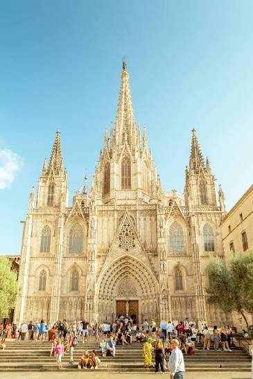

Catedral de Barcelona (La Seu)
Mitten im Gotischen Viertel, hinter einer 70 Meter hohen neugotischen Fassade, verbirgt sich eine der eindrucksvollsten Kirchen der Stadt – und ein kleiner Innenhof mit dreizehn lebenden Gänsen.

Geschichte
Schon 343 n. Chr. stand hier eine erste Basilika, die 985 von den Mauren zerstört wurde. Der heutige gotische Bau entstand ab 1298 unter König Jaume II. und wurde über das 14. Jahrhundert hinweg errichtet – die neugotische Hauptfassade kam allerdings erst Ende des 19. Jahrhunderts hinzu. Die Kathedrale ist der Heiligen Eulalia gewidmet, einer jungen Märtyrerin, die im 4. Jahrhundert von den Römern gefoltert und getötet wurde; ihr Leichnam liegt bis heute in der Krypta unter dem Hochaltar.
Warum besonders
Der gotische Kreuzgang aus dem 14. Jahrhundert ist einer der schönsten der Stadt – mit tropischen Pflanzen, einem kleinen Brunnen und eben den 13 weißen Gänsen, eine für jedes Lebensjahr der heiligen Eulalia. Über 200 mittelalterliche Wasserspeier zieren zudem die Fassade.
Praktische Hinweise
Liegt am Weg zwischen Barri Gòtic und El Born, passt gut in den Spaziergang am Tag 4. Besichtigung von außen und im Kreuzgang meist kostenlos möglich, für den Innenraum außerhalb der Gebetszeiten teils Eintritt. Kein fester Programmpunkt bei euch – kurzer Stopp beim Durchqueren des Viertels.